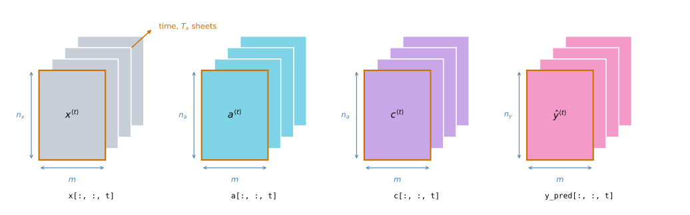
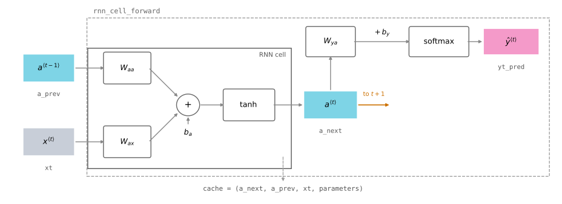
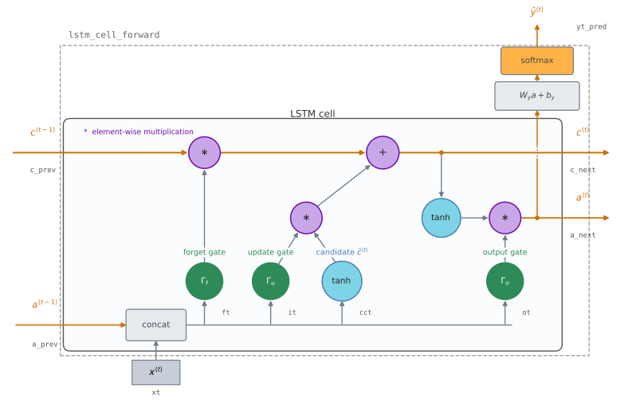
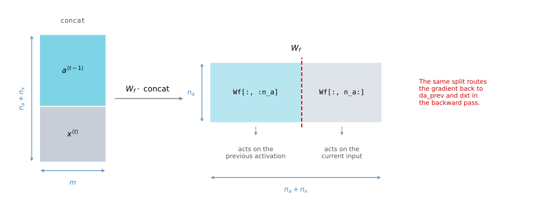
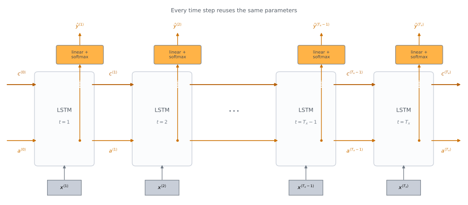
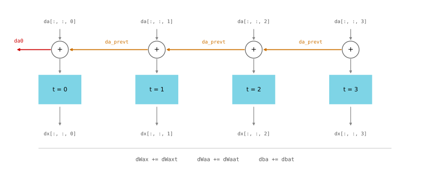

import numpy as np
import matplotlib.pyplot as plt
np.random.seed(1)Lab: Building Your Recurrent Neural Network Step by Step
deep-learning
sequence-models
rnn
lstm
backpropagation
numpy
lab
Implement the RNN cell, the LSTM cell, their forward passes over a sequence, and the optional backward passes through time, in plain NumPy.
This is the first assignment of Course 5. Everything the previous pages of this week described in equations gets written out here as NumPy code. You implement one step of a basic RNN cell, the loop that runs it over a whole sequence, the same two things for an LSTM cell, and, in an optional final part, the backward passes for both.
By the end of this lab you will be able to
- write the sequence-model notation as array shapes and index into them,
- implement the forward pass of a basic RNN cell and run it over \(T_x\) time steps,
- identify the components of an LSTM cell in code,
- implement backpropagation through time for a basic RNN and for an LSTM.
Recurrent networks work well on language and other sequence tasks because they have memory. They read inputs \(x^{\langle t \rangle}\), such as words, one at a time, and carry contextual information forward through the hidden state that is passed from one time step to the next.
The notation is the one used throughout the course. Superscript \([l]\) denotes an object associated with layer \(l\), superscript \((i)\) denotes an object from the \(i\)-th example, superscript \(\langle t \rangle\) denotes an object at time step \(t\), and subscript \(i\) denotes the \(i\)-th entry of a vector. Putting all four together, \(a_5^{(2)[3]\langle 4 \rangle}\) is the activation of the second training example, third layer, fourth time step, fifth entry of the vector.
Packages
Two imports carry the whole lab. There is no dataset here. Every function is exercised on small seeded random arrays, so the numbers printed below are reproducible on any machine.
np.random.seed(1) fixes the random number generator so that every run produces the same arrays. Without it the printed values would change on every run, and the shapes and numbers discussed in the text would not be the ones you see.
The assignment imports two activation functions from a helper module. Both are short enough to read here, and both are worth reading closely, because the axis they work along is the detail that makes them fit the shapes used in this lab.
def softmax(x):
"""Column-wise softmax. Each column of x is one training example."""
shifted = x - np.max(x, axis=0, keepdims=True)
e_x = np.exp(shifted)
return e_x / e_x.sum(axis=0, keepdims=True)
def sigmoid(x):
"""Element-wise logistic sigmoid, used for every gate in the LSTM."""
return 1 / (1 + np.exp(-x))Two details in softmax matter. Subtracting the maximum of each column before the exponential changes nothing mathematically, because that column’s constant cancels in its numerator and denominator, but it keeps np.exp from overflowing when scores are large. Summing along axis=0 sums down the rows, within each column. Training examples are stacked in columns throughout this course, so each column gets its own probability distribution that adds up to one.
NoteLab Files Download
Everything this lab needs, ready to download. There is no dataset, and every exercise runs on small seeded arrays.
- rnn_utils.py (5 KB), the file the assignment imports. It holds the
softmaxandsigmoidabove, plus Adam update helpers that this particular lab never calls.
Shapes Used Throughout the Lab
Five dimensions describe the main arrays used throughout this lab, and getting them straight up front makes the rest of the code easier to read.
\(n_x\) is the number of units in a single input at a single time step. Using language as the example, a vocabulary of 5000 words that is one-hot encoded gives \(n_x = 5000\). \(T_x\) is the number of time steps, that is, how long the sequence is. \(m\) is the number of examples in the mini-batch, and vectorizing over a batch is the reason every array has an \(m\) axis. \(n_a\) is the number of units in the hidden state, and \(n_y\) is the number of units in the prediction.
From those five dimensions, the basic RNN uses three time-indexed 3D tensors, and the LSTM adds a fourth for its cell state.
| Array | Shape | Meaning |
|---|---|---|
x |
\((n_x, m, T_x)\) | The input, every example, every time step |
a |
\((n_a, m, T_x)\) | The hidden state at every time step |
c |
\((n_a, m, T_x)\) | The LSTM cell state at every time step |
y_pred |
\((n_y, m, T_x)\) | The prediction at every time step |
The cell functions work on 2D slices, while the sequence functions consume and return the complete 3D tensors. Fixing the time step \(t\) takes a 2D slice of shape \((n_x, m)\) out of x, which the code calls xt and the math calls \(x^{\langle t \rangle}\). The same pattern gives a_prev or a_next for the hidden state, c_prev or c_next for the LSTM cell state, and yt_pred for the prediction.
On a small screen, scroll horizontally to inspect the complete diagram.

The picture is worth holding on to, because almost every bug in this lab is an indexing mistake rather than a mathematical one. A function that takes xt wants a 2D array, and a function that takes x wants the full 3D tensor.
Implementing an RNN then has two steps. First write the calculations for one time step, then write a loop over \(T_x\) time steps that processes the inputs one at a time.
Forward Propagation for the Basic RNN
The basic RNN built here has \(T_x = T_y\), so it produces one prediction per input, which is the shape used for the named entity recognition example.
RNN Cell
A recurrent neural network is the repeated use of a single cell. The cell takes the current input \(x^{\langle t \rangle}\) and the previous hidden state \(a^{\langle t-1 \rangle}\), and produces the next hidden state \(a^{\langle t \rangle}\), which is passed along to the next cell and is also used to predict \(\hat{y}^{\langle t \rangle}\).
On a small screen, scroll horizontally to inspect the complete diagram.

The cell itself outputs only the hidden state \(a^{\langle t \rangle}\). The function written here, rnn_cell_forward, does slightly more than the cell, because it also computes the prediction \(\hat{y}^{\langle t \rangle}\). That is the difference between the solid inner box and the dashed outer box in the figure.
Three things happen inside. The hidden state is computed with a tanh activation, following the forward propagation equations,
\[a^{\langle t \rangle} = \tanh\!\left(W_{aa}\,a^{\langle t-1 \rangle} + W_{ax}\,x^{\langle t \rangle} + b_a\right)\]
then the prediction is computed from that new hidden state,
\[\hat{y}^{\langle t \rangle} = \mathrm{softmax}\!\left(W_{ya}\,a^{\langle t \rangle} + b_y\right)\]
and finally the values that the backward pass will need are stored in a cache. That caching pattern is the same one used in the deep neural network lab in Course 1, applied now to time steps instead of layers.
The weights arrive in a dictionary called parameters rather than as separate arguments. That matters more than it looks, because the same dictionary is reused at every time step. Shared parameters are what make this a recurrent network rather than \(T_x\) independent layers.
def rnn_cell_forward(xt, a_prev, parameters):
"""
Implements a single forward step of the RNN cell.
Arguments:
xt -- input data at time step "t", numpy array of shape (n_x, m)
a_prev -- hidden state at time step "t-1", numpy array of shape (n_a, m)
parameters -- python dictionary containing:
Wax -- weight matrix multiplying the input, shape (n_a, n_x)
Waa -- weight matrix multiplying the hidden state, shape (n_a, n_a)
Wya -- weight matrix relating the hidden state to the output,
shape (n_y, n_a)
ba -- bias, shape (n_a, 1)
by -- bias relating the hidden state to the output, shape (n_y, 1)
Returns:
a_next -- next hidden state, of shape (n_a, m)
yt_pred -- prediction at time step "t", of shape (n_y, m)
cache -- tuple of values needed for the backward pass,
contains (a_next, a_prev, xt, parameters)
"""
# Retrieve parameters from "parameters".
Wax = parameters["Wax"]
Waa = parameters["Waa"]
Wya = parameters["Wya"]
ba = parameters["ba"]
by = parameters["by"]
# Compute the next activation state.
a_next = np.tanh(np.dot(Waa, a_prev) + np.dot(Wax, xt) + ba)
# Compute the output of the current cell.
yt_pred = softmax(np.dot(Wya, a_next) + by)
# Store the values needed for backward propagation.
cache = (a_next, a_prev, xt, parameters)
return a_next, yt_pred, cacheThe biases ba and by have shape \((n_a, 1)\) and \((n_y, 1)\), one column rather than \(m\) columns. NumPy broadcasting copies that single column across all \(m\) examples, which is right, because the bias belongs to the unit and not to the example.
To exercise the function, build one time step of a tiny network by hand. There are three input units, ten examples in the batch, five hidden units, and two output units, so \(n_x = 3\), \(m = 10\), \(n_a = 5\) and \(n_y = 2\).
np.random.seed(1)
xt_tmp = np.random.randn(3, 10)
a_prev_tmp = np.random.randn(5, 10)
parameters_tmp = {}
parameters_tmp['Waa'] = np.random.randn(5, 5)
parameters_tmp['Wax'] = np.random.randn(5, 3)
parameters_tmp['Wya'] = np.random.randn(2, 5)
parameters_tmp['ba'] = np.random.randn(5, 1)
parameters_tmp['by'] = np.random.randn(2, 1)
a_next_tmp, yt_pred_tmp, cache_tmp = rnn_cell_forward(xt_tmp, a_prev_tmp,
parameters_tmp)
print("a_next[4] =\n", a_next_tmp[4])
print("a_next.shape =", a_next_tmp.shape)
print("yt_pred[1] =\n", yt_pred_tmp[1])
print("yt_pred.shape =", yt_pred_tmp.shape)
print("column sums of yt_pred =", yt_pred_tmp.sum(axis=0))a_next[4] =
[ 0.59584544 0.18141802 0.61311866 0.99808218 0.85016201 0.99980978
-0.18887155 0.99815551 0.6531151 0.82872037]
a_next.shape = (5, 10)
yt_pred[1] =
[0.9888161 0.01682021 0.21140899 0.36817467 0.98988387 0.88945212
0.36920224 0.9966312 0.9982559 0.17746526]
yt_pred.shape = (2, 10)
column sums of yt_pred = [1. 1. 1. 1. 1. 1. 1. 1. 1. 1.]Read the shapes first. a_next came out \((5, 10)\), one hidden state of five units for each of the ten examples, and yt_pred came out \((2, 10)\), one two-way probability distribution per example. Neither shape mentions time, because a cell knows nothing about time. It sees one slice.
Two sanity checks are visible in the numbers. Every entry of a_next lies between \(-1\) and \(1\), which is the range of tanh, and several sit very close to \(1\), which is a saturated unit and a first hint of why gradients struggle to travel far through a basic RNN. The column sums of yt_pred are all exactly one, which confirms that softmax normalized down the columns and not across them.
RNN Forward Pass
A recurrent network is the cell above, used over and over. If the input sequence is ten time steps long, the cell runs ten times, always with the same parameters dictionary.
At each step the cell takes the hidden state from the previous step and the current time step’s input, and produces a new hidden state and a prediction. The loop keeps all of them, writing each 2D result into the right slice of a 3D tensor allocated up front.
Three pieces of bookkeeping make up the whole function. Allocate a and y_pred as zeros with their full 3D shapes. Set the running hidden state a_next to the initial state a0 that was passed in. Then loop, and at each step store a_next into a[:, :, t], store yt_pred into y_pred[:, :, t], and append the cell’s cache to a list.
def rnn_forward(x, a0, parameters):
"""
Implement the forward propagation of the recurrent neural network.
Arguments:
x -- input data for every time step, of shape (n_x, m, T_x)
a0 -- initial hidden state, of shape (n_a, m)
parameters -- python dictionary containing Waa, Wax, Wya, ba and by
Returns:
a -- hidden states for every time step, of shape (n_a, m, T_x)
y_pred -- predictions for every time step, of shape (n_y, m, T_x)
caches -- tuple of values needed for the backward pass,
contains (list of caches, x)
"""
# Initialize "caches", which will hold the list of all caches.
caches = []
# Retrieve dimensions from the shapes of x and parameters["Wya"].
n_x, m, T_x = x.shape
n_y, n_a = parameters["Wya"].shape
# Initialize "a" and "y_pred" with zeros.
a = np.zeros((n_a, m, T_x))
y_pred = np.zeros((n_y, m, T_x))
# Initialize a_next with the initial hidden state.
a_next = a0
# Loop over all time steps.
for t in range(T_x):
# Run the cell, which returns the new hidden state and the prediction.
a_next, yt_pred, cache = rnn_cell_forward(x[:, :, t], a_next, parameters)
# Save the new hidden state and the prediction in their 3D tensors.
a[:, :, t] = a_next
y_pred[:, :, t] = yt_pred
# Keep the cache for the backward pass.
caches.append(cache)
# Store the values needed for backward propagation.
caches = (caches, x)
return a, y_pred, cachesThe single line that makes this recurrent is a_next being both an output of the cell and the input to the next call. The variable is overwritten each pass through the loop, so the state at step \(t\) carries everything the network has seen up to that point.
Notice also where the dimensions come from. n_x, m, T_x = x.shape reads three of them straight off the input, and n_y, n_a = parameters["Wya"].shape reads the other two off a weight matrix. Nothing is hardcoded, so the same function runs on a batch of any size and a sequence of any length.
The caches that comes back is a tuple of two things, the list of per-step caches and the original input x. The backward pass needs both.
np.random.seed(1)
x_tmp = np.random.randn(3, 10, 4)
a0_tmp = np.random.randn(5, 10)
parameters_tmp = {}
parameters_tmp['Waa'] = np.random.randn(5, 5)
parameters_tmp['Wax'] = np.random.randn(5, 3)
parameters_tmp['Wya'] = np.random.randn(2, 5)
parameters_tmp['ba'] = np.random.randn(5, 1)
parameters_tmp['by'] = np.random.randn(2, 1)
a_tmp, y_pred_tmp, caches_tmp = rnn_forward(x_tmp, a0_tmp, parameters_tmp)
print("a[4][1] =", a_tmp[4][1])
print("a.shape =", a_tmp.shape)
print("y_pred[1][3] =", y_pred_tmp[1][3])
print("y_pred.shape =", y_pred_tmp.shape)
print("caches[1][1][3] =", caches_tmp[1][1][3])
print("len(caches) =", len(caches_tmp))
print("number of per-step caches =", len(caches_tmp[0]))a[4][1] = [-0.99999375 0.77911235 -0.99861469 -0.99833267]
a.shape = (5, 10, 4)
y_pred[1][3] = [0.79560373 0.86224861 0.11118257 0.81515947]
y_pred.shape = (2, 10, 4)
caches[1][1][3] = [-1.1425182 -0.34934272 -0.20889423 0.58662319]
len(caches) = 2
number of per-step caches = 4The input had four time steps, so a came back with shape \((5, 10, 4)\) and y_pred with shape \((2, 10, 4)\). The slice a_tmp[4][1] fixes the fifth hidden unit and the second example and leaves time free, so the four numbers printed are the value of one unit as the sequence unrolls.
len(caches) is 2 rather than 4, which surprises people every time. caches is the pair (list_of_caches, x), so its length counts those two entries. The count that tracks time is len(caches[0]), printed last, which is 4 as expected. caches_tmp[1] is the second element of the pair, that is, x itself, so caches_tmp[1][1][3] is a slice of the original input rather than of anything computed.
NoteWhat You Should Remember
- A recurrent neural network is the repeated use of a single cell, with the same parameters at every time step.
- A basic RNN reads inputs one at a time and carries information forward through the hidden state.
- Each cell takes two inputs, the previous hidden state and the current time step’s data, and produces two outputs, a new hidden state and a prediction.
- The time-step dimension of the input decides how many times the cell is reused.
This basic RNN works well enough for some applications, but it suffers from vanishing gradients. It does best when each output \(\hat{y}^{\langle t \rangle}\) can be estimated from local context, meaning from inputs whose time step is close to \(t\). The LSTM built next is better at holding a piece of information for many steps.
Review Questions
1. Why does rnn_forward pass the same parameters dictionary into every call of rnn_cell_forward instead of one dictionary per time step?
Answer
Because the parameters are shared across time. That sharing is what makes the network recurrent, and it is what lets a trained model handle sequences longer than the ones it saw during training. Giving each time step its own weights would turn the model into \(T_x\) separate layers, multiply the parameter count by \(T_x\), and remove any ability to generalize what was learned at one position to another.
1. rnn_forward returns caches with len(caches) == 2 even when the sequence has four time steps. What are those two entries?
Answer
The last line of the function repacks the list into a pair, caches = (caches, x). The first entry is the list of per-step caches, one for each time step, and the second entry is the original input tensor x. So len(caches) counts the pair, and len(caches[0]) is the number of time steps.
1. The bias ba has shape \((n_a, 1)\) while \(W_{aa}a^{\langle t-1 \rangle}\) has shape \((n_a, m)\). Why does the addition work, and why is that the shape you want?
Answer
NumPy broadcasting stretches the single column across all \(m\) columns, so the addition is legal. It is also the shape you want, because a bias belongs to a hidden unit, not to a training example. Every example in the batch must receive the same bias for that unit, which is exactly what broadcasting a \((n_a, 1)\) array does.
Long Short-Term Memory Network
The LSTM tracks and updates a cell state \(c^{\langle t \rangle}\) at every time step, alongside the hidden state \(a^{\langle t \rangle}\). The cell state is the long-term memory, and three gates decide what happens to it. The structure is built the same way as before, one cell first, then a loop that calls it over \(T_x\) time steps.
The recurrent part of the LSTM ends at a_next and c_next. As in the basic RNN function, lstm_cell_forward also applies a separate dense-softmax prediction head to a_next. The two states continue to the next time step, while the prediction does not feed the recurrent memory.
On a small screen, scroll horizontally to inspect the complete diagram.

Gates and States
The forget gate \(\Gamma_f^{\langle t \rangle}\) decides what to drop from the previous cell state. Imagine reading a piece of text and using the LSTM to track whether the subject of the sentence is singular, such as “puppy”, or plural, such as “puppies”. When the subject changes, the memory of the previous state is out of date, so it should be forgotten.
\[\Gamma_f^{\langle t \rangle} = \sigma\!\left(W_f\,[\,a^{\langle t-1 \rangle},\, x^{\langle t \rangle}\,] + b_f\right)\]
The sigmoid makes every entry of the gate a number between 0 and 1, and the gate has the same shape as \(c^{\langle t-1 \rangle}\), so the two can be multiplied element by element. An entry near 0 erases the corresponding unit of the previous cell state, and an entry near 1 keeps it almost untouched. Multiplying by the gate is like laying a mask over the memory.
The candidate value \(\tilde{c}^{\langle t \rangle}\) holds information from the current time step that may be written into the cell state.
\[\tilde{c}^{\langle t \rangle} = \tanh\!\left(W_c\,[\,a^{\langle t-1 \rangle},\, x^{\langle t \rangle}\,] + b_c\right)\]
The tanh produces values between \(-1\) and \(1\). The tilde distinguishes the candidate from the cell state itself, and how much of the candidate actually gets written is decided by the next gate.
The update gate \(\Gamma_u^{\langle t \rangle}\) decides which parts of the candidate are added to the cell state.
\[\Gamma_u^{\langle t \rangle} = \sigma\!\left(W_u\,[\,a^{\langle t-1 \rangle},\, x^{\langle t \rangle}\,] + b_u\right)\]
An entry near 1 lets the candidate through, and an entry near 0 blocks it. In the code this gate is called it, and its parameters are Wi and bi, with the letter i standing for the input gate, which is the name it carries in the research literature. There is no variable named Wu or bu anywhere in this lab, even though the course lectures write the gate as \(\Gamma_u\).
The cell state \(c^{\langle t \rangle}\) is the memory passed on to the next time step, and it combines the two branches above.
\[c^{\langle t \rangle} = \Gamma_f^{\langle t \rangle} * c^{\langle t-1 \rangle} + \Gamma_u^{\langle t \rangle} * \tilde{c}^{\langle t \rangle}\]
The old memory, masked by the forget gate, plus the candidate, masked by the update gate. The symbol \(*\) is element-wise multiplication, not a matrix product.
The output gate \(\Gamma_o^{\langle t \rangle}\) decides how much of that memory is exposed as the hidden state.
\[\Gamma_o^{\langle t \rangle} = \sigma\!\left(W_o\,[\,a^{\langle t-1 \rangle},\, x^{\langle t \rangle}\,] + b_o\right)\]
\[a^{\langle t \rangle} = \Gamma_o^{\langle t \rangle} * \tanh\!\left(c^{\langle t \rangle}\right)\]
The cell state is squashed back into \([-1, 1]\) by the tanh, and the output gate masks the result. The hidden state that comes out is what the next time step’s gates read, and it is also what the prediction is computed from.
\[\hat{y}^{\langle t \rangle} = \mathrm{softmax}\!\left(W_y\,a^{\langle t \rangle} + b_y\right)\]
Ten arrays therefore live in the parameters dictionary, four weight matrices and four biases for the gates and the candidate, plus one weight matrix and one bias for the prediction.
| Symbol | Code name | Shape |
|---|---|---|
| \(\Gamma_f^{\langle t \rangle}\), \(W_f\), \(b_f\) | ft, Wf, bf |
\((n_a, m)\), \((n_a, n_a + n_x)\), \((n_a, 1)\) |
| \(\Gamma_u^{\langle t \rangle}\), \(W_u\), \(b_u\) | it, Wi, bi |
\((n_a, m)\), \((n_a, n_a + n_x)\), \((n_a, 1)\) |
| \(\tilde{c}^{\langle t \rangle}\), \(W_c\), \(b_c\) | cct, Wc, bc |
\((n_a, m)\), \((n_a, n_a + n_x)\), \((n_a, 1)\) |
| \(\Gamma_o^{\langle t \rangle}\), \(W_o\), \(b_o\) | ot, Wo, bo |
\((n_a, m)\), \((n_a, n_a + n_x)\), \((n_a, 1)\) |
| \(c^{\langle t-1 \rangle}\), \(c^{\langle t \rangle}\) | c_prev, c_next |
\((n_a, m)\) |
| \(a^{\langle t-1 \rangle}\), \(a^{\langle t \rangle}\) | a_prev, a_next |
\((n_a, m)\) |
| \(\hat{y}^{\langle t \rangle}\), \(W_y\), \(b_y\) | yt_pred, Wy, by |
\((n_y, m)\), \((n_y, n_a)\), \((n_y, 1)\) |
Stacking Trick That Makes the Gates Cheap
Every one of the four formulas above multiplies a weight matrix by the same bracketed quantity \([\,a^{\langle t-1 \rangle},\, x^{\langle t \rangle}\,]\). That bracket is the simplified notation introduced with the basic RNN, and in code it is one call to np.concatenate along axis 0, which stacks the two arrays vertically because rows are units and columns are examples.
On a small screen, scroll horizontally to inspect the complete diagram.

Reading the shapes off the picture explains why \(W_f\) is \((n_a, n_a + n_x)\) rather than two separate matrices. One matrix multiply replaces two, and the left \(n_a\) columns are the part that acts on \(a^{\langle t-1 \rangle}\) while the remaining \(n_x\) columns act on \(x^{\langle t \rangle}\). That column split becomes important again in the backward pass, where it is what separates the gradient flowing to the previous hidden state from the gradient flowing to the input.
LSTM Cell
With the concatenation in hand, the cell is the six formulas written in order, then the prediction.
def lstm_cell_forward(xt, a_prev, c_prev, parameters):
"""
Implement a single forward step of the LSTM cell.
Arguments:
xt -- input data at time step "t", of shape (n_x, m)
a_prev -- hidden state at time step "t-1", of shape (n_a, m)
c_prev -- memory state at time step "t-1", of shape (n_a, m)
parameters -- python dictionary containing:
Wf, bf -- forget gate weight and bias
Wi, bi -- update gate weight and bias
Wc, bc -- candidate value weight and bias
Wo, bo -- output gate weight and bias
Wy, by -- prediction weight and bias
each weight has shape (n_a, n_a + n_x) except Wy, (n_y, n_a)
Returns:
a_next -- next hidden state, of shape (n_a, m)
c_next -- next memory state, of shape (n_a, m)
yt_pred -- prediction at time step "t", of shape (n_y, m)
cache -- tuple of values needed for the backward pass
Note: ft, it and ot stand for the forget, update and output gates,
cct stands for the candidate value (c tilde), and c is the
cell state, that is, the memory.
"""
# Retrieve parameters from "parameters".
Wf = parameters["Wf"] # forget gate weight
bf = parameters["bf"]
Wi = parameters["Wi"] # update gate weight (notice the variable name)
bi = parameters["bi"] # (notice the variable name)
Wc = parameters["Wc"] # candidate value weight
bc = parameters["bc"]
Wo = parameters["Wo"] # output gate weight
bo = parameters["bo"]
Wy = parameters["Wy"] # prediction weight
by = parameters["by"]
# Retrieve dimensions from the shapes of xt and Wy.
n_x, m = xt.shape
n_y, n_a = Wy.shape
# Stack the previous activation on top of the current input.
concat = np.concatenate((a_prev, xt), axis=0)
# The three gates and the candidate value.
ft = sigmoid(np.dot(Wf, concat) + bf)
it = sigmoid(np.dot(Wi, concat) + bi)
cct = np.tanh(np.dot(Wc, concat) + bc)
# The new memory, then the new hidden state.
c_next = ft * c_prev + it * cct
ot = sigmoid(np.dot(Wo, concat) + bo)
a_next = ot * np.tanh(c_next)
# Compute the prediction of the LSTM cell.
yt_pred = softmax(np.dot(Wy, a_next) + by)
# Store the values needed for backward propagation.
cache = (a_next, c_next, a_prev, c_prev, ft, it, cct, ot, xt, parameters)
return a_next, c_next, yt_pred, cacheThe cache is much larger than the RNN one, ten entries against four. Everything the gates computed is kept, because the backward pass differentiates through each of them and recomputing a sigmoid is more expensive than storing its result.
The demo below uses the same sizes as before, \(n_x = 3\), \(m = 10\), \(n_a = 5\) and \(n_y = 2\), so each gate weight is \((5, 8)\), five hidden units by five plus three stacked input rows.
np.random.seed(1)
xt_tmp = np.random.randn(3, 10)
a_prev_tmp = np.random.randn(5, 10)
c_prev_tmp = np.random.randn(5, 10)
parameters_tmp = {}
parameters_tmp['Wf'] = np.random.randn(5, 5 + 3)
parameters_tmp['bf'] = np.random.randn(5, 1)
parameters_tmp['Wi'] = np.random.randn(5, 5 + 3)
parameters_tmp['bi'] = np.random.randn(5, 1)
parameters_tmp['Wo'] = np.random.randn(5, 5 + 3)
parameters_tmp['bo'] = np.random.randn(5, 1)
parameters_tmp['Wc'] = np.random.randn(5, 5 + 3)
parameters_tmp['bc'] = np.random.randn(5, 1)
parameters_tmp['Wy'] = np.random.randn(2, 5)
parameters_tmp['by'] = np.random.randn(2, 1)
a_next_tmp, c_next_tmp, yt_tmp, cache_tmp = lstm_cell_forward(
xt_tmp, a_prev_tmp, c_prev_tmp, parameters_tmp)
print("a_next[4] =\n", a_next_tmp[4])
print("a_next.shape =", a_next_tmp.shape)
print("c_next[2] =\n", c_next_tmp[2])
print("c_next.shape =", c_next_tmp.shape)
print("yt[1] =", yt_tmp[1])
print("yt.shape =", yt_tmp.shape)
print("len(cache) =", len(cache_tmp))
print("concat shape inside the cell =",
np.concatenate((a_prev_tmp, xt_tmp), axis=0).shape)a_next[4] =
[-0.66408471 0.0036921 0.02088357 0.22834167 -0.85575339 0.00138482
0.76566531 0.34631421 -0.00215674 0.43827275]
a_next.shape = (5, 10)
c_next[2] =
[ 0.63267805 1.00570849 0.35504474 0.20690913 -1.64566718 0.11832942
0.76449811 -0.0981561 -0.74348425 -0.26810932]
c_next.shape = (5, 10)
yt[1] = [0.79913913 0.15986619 0.22412122 0.15606108 0.97057211 0.31146381
0.00943007 0.12666353 0.39380172 0.07828381]
yt.shape = (2, 10)
len(cache) = 10
concat shape inside the cell = (8, 10)The hidden state and the cell state both came out \((5, 10)\), and they are genuinely different arrays. Compare their ranges. Every entry of a_next sits inside \([-1, 1]\), because it is an output gate, itself between 0 and 1, times a tanh. The entries of c_next are not bounded that way, and two of the ten values in the printed row fall outside \([-1, 1]\), because the cell state is a running sum rather than the output of a squashing function. That freedom is what lets the memory hold a value steady over many steps instead of decaying toward zero.
The last line confirms the stacking. The concatenated matrix is \((8, 10)\), five rows of previous activation on top of three rows of input, which is exactly what the \((5, 8)\) gate weights expect on their right-hand side.
Forward Pass for LSTM
The loop over time steps looks like rnn_forward with one more tensor to fill in, the cell state c.
Unrolling repeats the same LSTM cell with shared parameters. Both a_next and c_next become the previous states for the following call, while one input enters and one prediction is stored at every time step.
On a small screen, scroll horizontally to inspect the complete diagram.

Two initialization details matter. The cell-state history c must be allocated independently from the hidden-state history a. Writing c = a would make both names refer to the same array, so storing either state would overwrite the other. The running cell state starts at zero in this lab, and c_next = np.zeros((n_a, m)) states that initial condition directly. Writing c_next = c[:, :, 0] would create a view, but it would not corrupt later slices in this implementation. The first cell call only reads that view and returns a newly computed array before the first slice of c is filled. Writing c_next = a_next would instead use a0 as the initial cell state, which is the wrong initial condition.
def lstm_forward(x, a0, parameters):
"""
Implement the forward propagation of the recurrent neural network using
an LSTM cell.
Arguments:
x -- input data for every time step, of shape (n_x, m, T_x)
a0 -- initial hidden state, of shape (n_a, m)
parameters -- python dictionary containing Wf, bf, Wi, bi, Wc, bc,
Wo, bo, Wy and by
Returns:
a -- hidden states for every time step, of shape (n_a, m, T_x)
y -- predictions for every time step, of shape (n_y, m, T_x)
c -- cell states for every time step, of shape (n_a, m, T_x)
caches -- tuple of values needed for the backward pass,
contains (list of all the caches, x)
"""
# Initialize "caches", which will track the list of all the caches.
caches = []
Wy = parameters['Wy']
# Retrieve dimensions from the shapes of x and parameters['Wy'].
n_x, m, T_x = x.shape
n_y, n_a = Wy.shape
# Initialize "a", "c" and "y" with zeros.
a = np.zeros((n_a, m, T_x))
c = np.zeros((n_a, m, T_x))
y = np.zeros((n_y, m, T_x))
# Initialize a_next and c_next. The memory starts empty.
a_next = a0
c_next = np.zeros((n_a, m))
# Loop over all time steps.
for t in range(T_x):
# Get the 2D slice 'xt' from the 3D input 'x' at time step 't'.
xt = x[:, :, t]
# Run one LSTM cell.
a_next, c_next, yt, cache = lstm_cell_forward(xt, a_next, c_next,
parameters)
# Save the hidden state, the cell state and the prediction.
a[:, :, t] = a_next
c[:, :, t] = c_next
y[:, :, t] = yt
# Keep the cache for the backward pass.
caches.append(cache)
# Store the values needed for backward propagation.
caches = (caches, x)
return a, y, c, cachesThe initial cell state is zeros rather than something passed in. The network starts each sequence with an empty memory, and the first forget gate has nothing to forget.
The demo uses a longer sequence than before, seven time steps, so the difference between the per-step arrays and the full tensors is easy to see.
np.random.seed(1)
x_tmp = np.random.randn(3, 10, 7)
a0_tmp = np.random.randn(5, 10)
parameters_tmp = {}
parameters_tmp['Wf'] = np.random.randn(5, 5 + 3)
parameters_tmp['bf'] = np.random.randn(5, 1)
parameters_tmp['Wi'] = np.random.randn(5, 5 + 3)
parameters_tmp['bi'] = np.random.randn(5, 1)
parameters_tmp['Wo'] = np.random.randn(5, 5 + 3)
parameters_tmp['bo'] = np.random.randn(5, 1)
parameters_tmp['Wc'] = np.random.randn(5, 5 + 3)
parameters_tmp['bc'] = np.random.randn(5, 1)
parameters_tmp['Wy'] = np.random.randn(2, 5)
parameters_tmp['by'] = np.random.randn(2, 1)
a_tmp, y_tmp, c_tmp, caches_tmp = lstm_forward(x_tmp, a0_tmp, parameters_tmp)
print("a[4][3][6] =", a_tmp[4][3][6])
print("a.shape =", a_tmp.shape)
print("y[1][4][3] =", y_tmp[1][4][3])
print("y.shape =", y_tmp.shape)
print("c[1][2][1] =", c_tmp[1][2][1])
print("c.shape =", c_tmp.shape)
print("number of per-step caches =", len(caches_tmp[0]))
print("cell state of unit 1, example 2, over time =\n", c_tmp[1, 2, :])a[4][3][6] = 0.17211776753291658
a.shape = (5, 10, 7)
y[1][4][3] = 0.9508734618501101
y.shape = (2, 10, 7)
c[1][2][1] = -0.8555449167181983
c.shape = (5, 10, 7)
number of per-step caches = 7
cell state of unit 1, example 2, over time =
[ 0.96880753 -0.85554492 -0.44195677 -0.03077283 0.23059801 0.42490545
-0.04061356]The three output tensors came back with seven sheets each, one per time step. The last line prints one memory unit for one example as the sequence unrolls. In a trained network, a nearly constant stretch can indicate that the forget gate stayed near 1 while the update contribution stayed near 0. A sharp change can indicate that the memory was rewritten. These parameters are random, so this trajectory has no learned interpretation. Every value in this particular seven-step trace happens to lie inside \([-1, 1]\). That does not impose this bound on the cell state. The earlier single-cell c_next[2] row contains values outside the interval, and the update equation explains why. No final tanh constrains \(c^{\langle t\rangle}\).
The following regression checks compare each implementation with its equations and with a manually unrolled sequence. The first check also uses scores with very different column scales, which catches a softmax that subtracts one global maximum instead of one maximum per column.
Forward regression checks passed.
NoteWhat You Should Remember
- An LSTM passes information forward through a hidden state, like an RNN, and additionally through a cell state, which acts as long-term memory and is what mitigates vanishing gradients.
- Three gates control that memory. The forget gate decides what to drop from the previous cell state, the update gate decides what part of the candidate to write, and the output gate decides how much of the memory is exposed as the hidden state.
- Every gate is a sigmoid, so its entries lie between 0 and 1, and it is applied by element-wise multiplication, which makes it a soft mask.
- Stacking \(a^{\langle t-1 \rangle}\) on top of \(x^{\langle t \rangle}\) turns two matrix multiplications per gate into one, at the cost of remembering that the first \(n_a\) columns of each weight matrix belong to the activation.
Implementing the forward pass is enough to build working systems, because a deep learning framework computes the backward pass for you. The rest of this page is optional and works through that backward pass by hand.
Review Questions
1. The lecture notes call the second gate \(\Gamma_u\) and its weight \(W_u\), but the code calls them it and Wi. Are these two different gates?
Answer
They are the same gate. The course calls it the update gate and writes \(\Gamma_u\), while the research literature calls it the input gate, which is where the letter i in it, Wi and bi comes from. No variable named Wu or bu exists in this lab.
1. Why is np.zeros((n_a, m)) the clearest initialization for c_next, and which assignment would create an actual aliasing bug?
Answer
This lab defines the initial cell state \(c^{\langle 0\rangle}\) as zero, so a fresh zero array expresses that condition directly. c_next = c[:, :, 0] creates a view, but the current loop only reads it during the first cell call and then rebinds c_next to a newly computed array. It therefore does not corrupt later states here. The actual aliasing bug is c = a, which makes the complete cell-state and hidden-state histories share one array. c_next = a_next is also incorrect because it uses \(a^{\langle 0\rangle}\) as \(c^{\langle 0\rangle}\), although later calls rebind the variable.
1. The entries of a_next always land inside \([-1, 1]\), while the entries of c_next need not. Why, and why does that difference matter?
Answer
The hidden state is \(\Gamma_o * \tanh(c^{\langle t \rangle})\), a number in \([0, 1]\) times a number in \([-1, 1]\), so it is bounded by construction. The cell state is \(\Gamma_f * c^{\langle t-1 \rangle} + \Gamma_u * \tilde{c}^{\langle t \rangle}\), a running sum that passes through no squashing function. That is what allows a value to be held steady across many time steps, which is the whole point of the memory, whereas a repeatedly squashed quantity would decay.
1. Each gate weight has shape \((n_a, n_a + n_x)\). Where does the second dimension come from, and what would the alternative look like?
Answer
It comes from concatenating \(a^{\langle t-1 \rangle}\), which has \(n_a\) rows, on top of \(x^{\langle t \rangle}\), which has \(n_x\) rows, into one matrix with \(n_a + n_x\) rows. The alternative is to keep two matrices per gate, one \((n_a, n_a)\) and one \((n_a, n_x)\), and add their two products, exactly as rnn_cell_forward does with \(W_{aa}\) and \(W_{ax}\). The parameter count is identical either way. Concatenating just replaces two matrix multiplications with one.
Backpropagation in Recurrent Neural Networks
In modern deep learning frameworks you implement only the forward pass, and the framework takes care of the backward pass, so most engineers never write the code below. Working through it once is still worthwhile, because it explains what all those cached values were for and why the gradient struggles to travel far back in time.
The equations are stated rather than derived, following the assignment. Two conventions apply throughout. The shorthand for the partial derivative of the cost with respect to a variable is dVariable, so \(\partial J / \partial W_{ax}\) is written \(dW_{ax}\). In the equations, juxtaposition and \(\cdot\) denote matrix multiplication, while \(*\) denotes element-wise multiplication. The matching NumPy operations are np.dot(...) and *.
One scoping note matters before any code. The functions below do not implement the path from the loss \(J\) back to \(a\), which would include the dense layer and the softmax that rnn_cell_forward computes. That part is assumed to be calculated elsewhere, and its result arrives as the argument da. The loss is also assumed to be already averaged over the batch, so nothing here divides by \(m\).
Basic RNN Cell Backward
The forward pass of the cell was one tanh. Differentiating it needs the derivative of tanh, which is
\[\frac{\partial \tanh(z)}{\partial z} = 1 - \tanh^2(z)\]
The quantity inside the tanh was \(W_{ax}x^{\langle t \rangle} + W_{aa}a^{\langle t-1 \rangle} + b_a\), and its tanh was already computed in the forward pass and stored in the cache as a_next. So \(1 - \tanh^2(\cdot)\) is just \(1 - a_{next}^2\), with no recomputation. Multiplying by the incoming gradient gives the gradient at the pre-activation,
\[dtanh = da_{next} * \left(1 - \left(a^{\langle t \rangle}\right)^2\right)\]
and every other gradient in the cell follows from that one array by the chain rule.
\[dW_{ax} = dtanh \cdot \left(x^{\langle t \rangle}\right)^{T} \qquad dW_{aa} = dtanh \cdot \left(a^{\langle t-1 \rangle}\right)^{T} \qquad db_a = \sum_{batch} dtanh\]
\[dx^{\langle t \rangle} = W_{ax}^{T} \cdot dtanh \qquad da_{prev} = W_{aa}^{T} \cdot dtanh\]
The pattern is the same one from every previous course. A gradient with respect to a weight is the incoming gradient times the input that the weight multiplied, and a gradient with respect to an input is the weight transposed times the incoming gradient. The bias gradient sums over the batch axis, axis=1, because the same bias was broadcast to all \(m\) examples on the way forward, so all \(m\) contributions come back to it. keepdims=True keeps the result at shape \((n_a, 1)\) instead of collapsing it to \((n_a,)\), which is what makes it line up with ba.
def rnn_cell_backward(da_next, cache):
"""
Implements the backward pass for the RNN cell (single time step).
Arguments:
da_next -- gradient of the loss with respect to the next hidden state
cache -- tuple of values from rnn_cell_forward()
Returns:
gradients -- python dictionary containing:
dxt -- gradient of the input data, of shape (n_x, m)
da_prev -- gradient of the previous hidden state, (n_a, m)
dWax -- gradient of the input-to-hidden weights, (n_a, n_x)
dWaa -- gradient of the hidden-to-hidden weights, (n_a, n_a)
dba -- gradient of the bias vector, of shape (n_a, 1)
"""
# Retrieve values from the cache.
(a_next, a_prev, xt, parameters) = cache
# Retrieve values from parameters.
Wax = parameters["Wax"]
Waa = parameters["Waa"]
Wya = parameters["Wya"]
ba = parameters["ba"]
by = parameters["by"]
# Gradient at the pre-activation, using a_next instead of recomputing tanh.
dtanh = (1 - a_next ** 2) * da_next
# Gradients with respect to Wax and to the input.
dxt = np.dot(Wax.T, dtanh)
dWax = np.dot(dtanh, xt.T)
# Gradients with respect to Waa and to the previous hidden state.
da_prev = np.dot(Waa.T, dtanh)
dWaa = np.dot(dtanh, a_prev.T)
# Gradient with respect to the bias, summed over the batch.
dba = np.sum(dtanh, axis=1, keepdims=True)
gradients = {"dxt": dxt, "da_prev": da_prev, "dWax": dWax,
"dWaa": dWaa, "dba": dba}
return gradientsRun one cell forward, invent an incoming gradient of the right shape, and run it backward.
np.random.seed(1)
xt_tmp = np.random.randn(3, 10)
a_prev_tmp = np.random.randn(5, 10)
parameters_tmp = {}
parameters_tmp['Wax'] = np.random.randn(5, 3)
parameters_tmp['Waa'] = np.random.randn(5, 5)
parameters_tmp['Wya'] = np.random.randn(2, 5)
parameters_tmp['ba'] = np.random.randn(5, 1)
parameters_tmp['by'] = np.random.randn(2, 1)
a_next_tmp, yt_tmp, cache_tmp = rnn_cell_forward(xt_tmp, a_prev_tmp,
parameters_tmp)
da_next_tmp = np.random.randn(5, 10)
gradients_tmp = rnn_cell_backward(da_next_tmp, cache_tmp)
for name in ["dxt", "da_prev", "dWax", "dWaa", "dba"]:
print(f"gradients[{name!r}].shape =", gradients_tmp[name].shape)
print()
print("xt.shape =", xt_tmp.shape, " Wax.shape =", parameters_tmp['Wax'].shape)
print("a_prev.shape =", a_prev_tmp.shape, " Waa.shape =",
parameters_tmp['Waa'].shape)
print("ba.shape =", parameters_tmp['ba'].shape)
print()
print("gradients['dxt'][1][2] =", gradients_tmp["dxt"][1][2])
print("gradients['dWax'][3][1] =", gradients_tmp["dWax"][3][1])
print("gradients['dba'][4] =", gradients_tmp["dba"][4])gradients['dxt'].shape = (3, 10)
gradients['da_prev'].shape = (5, 10)
gradients['dWax'].shape = (5, 3)
gradients['dWaa'].shape = (5, 5)
gradients['dba'].shape = (5, 1)
xt.shape = (3, 10) Wax.shape = (5, 3)
a_prev.shape = (5, 10) Waa.shape = (5, 5)
ba.shape = (5, 1)
gradients['dxt'][1][2] = -1.3872130506020925
gradients['dWax'][3][1] = 0.41077282493545836
gradients['dba'][4] = [0.20023491]The shapes printed side by side are the check worth doing every time. A gradient always has the same shape as the thing it is a gradient of. dxt matches xt at \((3, 10)\), dWax matches Wax at \((5, 3)\), dWaa matches Waa at \((5, 5)\), and dba matches ba at \((5, 1)\). If any of those disagreed, a transpose is in the wrong place, and the error would otherwise stay hidden until the update step produced nonsense.
Note also what is missing. Wya and by were retrieved from parameters but never used, because the prediction branch is not part of this backward pass. Its contribution is assumed to be folded into da_next already.
Backward Pass Over the Whole Sequence
Running the cell backward at every time step is where backpropagation through time actually happens, and it introduces one idea that has no equivalent in a feed-forward network.
The hidden state \(a^{\langle t \rangle}\) was used twice on the way forward. It produced the prediction at time \(t\), and it was passed to the cell at time \(t+1\). A quantity used in two places collects gradient from both, so the total gradient arriving at \(a^{\langle t \rangle}\) is the sum of what comes down from the loss at that step, which is da[:, :, t], and what comes back from the future, which is the da_prev returned by the step after it.
On a small screen, scroll horizontally to inspect the complete diagram.

Two kinds of accumulation appear in the figure, and they work differently. The activation gradient is added once per step, at the plus node, and then flows on to the previous step. The parameter gradients are accumulated across every step with +=, because \(W_{ax}\), \(W_{aa}\) and \(b_a\) were used at all \(T_x\) time steps, so each step contributes a term to their totals. The input gradient is different again. Each dxt is stored into its own slice of dx rather than added, because \(x^{\langle t \rangle}\) was used at exactly one step.
The loop runs backward with reversed(range(T_x)), since the gradient at step \(t\) needs the gradient from step \(t+1\). Whatever da_prev is left over after the final iteration, meaning after step 0, is the gradient with respect to the initial hidden state \(a^{\langle 0 \rangle}\), which the code stores as da0.
da, the original input x, and the list of per-step caches must describe the same unrolled computation. The function checks that both arrays are 3D, their batch and time dimensions agree, the cache list contains exactly one entry per time step, and the cached activation and input shapes match. A mismatch raises ValueError before the loop begins instead of producing a partial gradient.
def rnn_backward(da, caches):
"""
Implement the backward pass for an RNN over an entire sequence.
Arguments:
da -- upstream gradients of all hidden states, of shape (n_a, m, T_x)
caches -- tuple of values from the forward pass (rnn_forward)
Returns:
gradients -- python dictionary containing:
dx -- gradient with respect to the input data, (n_x, m, T_x)
da0 -- gradient with respect to the initial hidden state,
of shape (n_a, m)
dWax -- gradient with respect to Wax, of shape (n_a, n_x)
dWaa -- gradient with respect to Waa, of shape (n_a, n_a)
dba -- gradient with respect to the bias, of shape (n_a, 1)
"""
# Validate that da, x, and the per-step caches describe one sequence.
if not isinstance(da, np.ndarray) or da.ndim != 3:
raise ValueError("da must be a 3D array with shape (n_a, m, T_x)")
if not isinstance(caches, tuple) or len(caches) != 2:
raise ValueError("caches must be the (cache_list, x) tuple from rnn_forward")
cache_list, x = caches
if not isinstance(x, np.ndarray) or x.ndim != 3:
raise ValueError("cached x must be a 3D array with shape (n_x, m, T_x)")
n_x, m, T_x = x.shape
if T_x == 0:
raise ValueError("the cached sequence must contain at least one time step")
if da.shape[1:] != (m, T_x):
raise ValueError(
f"da batch/time shape {da.shape[1:]} does not match x {(m, T_x)}")
if not isinstance(cache_list, (list, tuple)) or len(cache_list) != T_x:
raise ValueError(
f"expected {T_x} RNN cell caches, received "
f"{len(cache_list) if isinstance(cache_list, (list, tuple)) else 'a non-list'}")
first_cache = cache_list[0]
if not isinstance(first_cache, tuple) or len(first_cache) != 4:
raise ValueError("each RNN cell cache must contain four entries")
a1, a0, x1, parameters = first_cache
if not isinstance(a1, np.ndarray) or a1.ndim != 2:
raise ValueError("cached hidden states must be 2D arrays")
n_a = a1.shape[0]
if da.shape[0] != n_a:
raise ValueError(
f"da has {da.shape[0]} hidden units, but the cache has {n_a}")
for t, cache in enumerate(cache_list):
if not isinstance(cache, tuple) or len(cache) != 4:
raise ValueError(f"RNN cache at time step {t} must contain four entries")
a_next_t, a_prev_t, xt_t, _ = cache
if (not isinstance(a_next_t, np.ndarray)
or not isinstance(a_prev_t, np.ndarray)
or not isinstance(xt_t, np.ndarray)
or a_next_t.shape != (n_a, m)
or a_prev_t.shape != (n_a, m)
or xt_t.shape != (n_x, m)):
raise ValueError(f"RNN cache at time step {t} has inconsistent shapes")
# Initialize the gradients with the right sizes.
dx = np.zeros((n_x, m, T_x))
dWax = np.zeros((n_a, n_x))
dWaa = np.zeros((n_a, n_a))
dba = np.zeros((n_a, 1))
da0 = np.zeros((n_a, m))
da_prevt = np.zeros((n_a, m))
# Loop through all the time steps, backwards.
for t in reversed(range(T_x)):
# The gradient arriving at a<t> is the sum of the one from the loss
# at this step and the one coming back from the step after it.
gradients = rnn_cell_backward(da[:, :, t] + da_prevt, cache_list[t])
# Retrieve the derivatives from this step.
dxt, da_prevt = gradients["dxt"], gradients["da_prev"]
dWaxt, dWaat, dbat = (gradients["dWax"], gradients["dWaa"],
gradients["dba"])
# Store dx for this step, and accumulate the parameter gradients.
dx[:, :, t] = dxt
dWax += dWaxt
dWaa += dWaat
dba += dbat
# After the last iteration, what is left is the gradient w.r.t. a<0>.
da0 = da_prevt
gradients = {"dx": dx, "da0": da0, "dWax": dWax, "dWaa": dWaa, "dba": dba}
return gradientsNote that da_prevt starts as zeros. At the final time step there is no future, so nothing is added there, and the plus node in the figure contributes only da[:, :, T_x - 1].
np.random.seed(1)
x_tmp = np.random.randn(3, 10, 4)
a0_tmp = np.random.randn(5, 10)
parameters_tmp = {}
parameters_tmp['Wax'] = np.random.randn(5, 3)
parameters_tmp['Waa'] = np.random.randn(5, 5)
parameters_tmp['Wya'] = np.random.randn(2, 5)
parameters_tmp['ba'] = np.random.randn(5, 1)
parameters_tmp['by'] = np.random.randn(2, 1)
a_tmp, y_tmp, caches_tmp = rnn_forward(x_tmp, a0_tmp, parameters_tmp)
da_tmp = np.random.randn(5, 10, 4)
gradients_tmp = rnn_backward(da_tmp, caches_tmp)
print("gradients['dx'][1][2] =", gradients_tmp["dx"][1][2])
print("gradients['dx'].shape =", gradients_tmp["dx"].shape)
print("gradients['da0'][2][3] =", gradients_tmp["da0"][2][3])
print("gradients['da0'].shape =", gradients_tmp["da0"].shape)
print("gradients['dWax'][3][1] =", gradients_tmp["dWax"][3][1])
print("gradients['dWax'].shape =", gradients_tmp["dWax"].shape)
print("gradients['dWaa'][1][2] =", gradients_tmp["dWaa"][1][2])
print("gradients['dWaa'].shape =", gradients_tmp["dWaa"].shape)
print("gradients['dba'][4] =", gradients_tmp["dba"][4])
print("gradients['dba'].shape =", gradients_tmp["dba"].shape)gradients['dx'][1][2] = [-2.07101689 -0.59255627 0.02466855 0.01483317]
gradients['dx'].shape = (3, 10, 4)
gradients['da0'][2][3] = -0.31494237512665046
gradients['da0'].shape = (5, 10)
gradients['dWax'][3][1] = 11.264104496527779
gradients['dWax'].shape = (5, 3)
gradients['dWaa'][1][2] = 2.30333312657989
gradients['dWaa'].shape = (5, 5)
gradients['dba'][4] = [-0.74747722]
gradients['dba'].shape = (5, 1)Every shape matches the forward quantity it corresponds to. dx is \((3, 10, 4)\) like x, da0 is \((5, 10)\) like a0, and the three parameter gradients match their parameters, with no time axis left, because the sum over time has already been taken.
The sequence-level and single-cell demonstrations use different random inputs, states, parameters, and upstream gradients, so their numerical gradient magnitudes cannot be compared. What the sequence result establishes is that parameter gradients accumulate contributions from every time step. More generally, a gradient traveling backward through a basic RNN encounters a product of changing Jacobians that contain \(W_{aa}^{T}\) and the tanh derivatives. Products whose norms remain above one can make the gradient explode, while products whose norms remain below one can make it vanish. This repeated-Jacobian mechanism, rather than the unrelated printed values, is why gradient clipping is commonly used when training RNNs.
LSTM Cell Backward
The LSTM backward pass is longer than the RNN one, because there are four things to differentiate through instead of one, but the shape of the work is the same. Compute the gradient at each pre-activation first, then read the parameter gradients off those.
Two gradients arrive at an LSTM cell rather than one. da_next comes back through the hidden state, and dc_next comes back through the cell state, because \(c^{\langle t \rangle}\) was handed to the next time step directly.
Those two paths meet inside the cell. It is clearer to combine them once as the total gradient with respect to the new cell state.
On a small screen, scroll horizontally to inspect the complete equation.
\[ dc_{\mathrm{total}} = dc_{next} + \Gamma_o^{\langle t \rangle} * \left(1 - \tanh^2(c_{next})\right) * da_{next} \]
The output gate has a separate direct path from the hidden state. The remaining three pre-activation gradients all use \(dc_{\mathrm{total}}\).
\[ \begin{aligned} d\gamma_o^{\langle t \rangle} &= da_{next} * \tanh(c_{next}) * \Gamma_o^{\langle t \rangle} * \left(1-\Gamma_o^{\langle t \rangle}\right) \\ d\tilde{c}_{\mathrm{pre}}^{\langle t \rangle} &= dc_{\mathrm{total}} * \Gamma_u^{\langle t \rangle} * \left(1-\left(\tilde{c}^{\langle t \rangle}\right)^2\right) \\ d\gamma_u^{\langle t \rangle} &= dc_{\mathrm{total}} * \tilde{c}^{\langle t \rangle} * \Gamma_u^{\langle t \rangle} * \left(1-\Gamma_u^{\langle t \rangle}\right) \\ d\gamma_f^{\langle t \rangle} &= dc_{\mathrm{total}} * c_{prev} * \Gamma_f^{\langle t \rangle} * \left(1-\Gamma_f^{\langle t \rangle}\right) \end{aligned} \]
Each line is a gradient at the value just before a sigmoid or tanh. The final factor is the derivative of that activation, written in terms of the output already stored in the cache. In the code, dcct is \(d\tilde{c}_{\mathrm{pre}}^{\langle t \rangle}\).
Let \(z^{\langle t \rangle} = [a_{prev}; x^{\langle t \rangle}]\) denote the concatenated input from the forward pass. Each parameter gradient is its pre-activation gradient times \((z^{\langle t \rangle})^T\).
\[ \begin{aligned} dW_f &= d\gamma_f^{\langle t \rangle}(z^{\langle t \rangle})^T, & dW_u &= d\gamma_u^{\langle t \rangle}(z^{\langle t \rangle})^T, \\ dW_c &= d\tilde{c}_{\mathrm{pre}}^{\langle t \rangle}(z^{\langle t \rangle})^T, & dW_o &= d\gamma_o^{\langle t \rangle}(z^{\langle t \rangle})^T. \end{aligned} \]
The four bias gradients are the matching sums over the batch axis, such as \(db_f = \sum_{batch} d\gamma_f^{\langle t \rangle}\), with keepdims=True.
Finally, split each gate matrix into the columns that acted on \(a_{prev}\) and those that acted on \(x^{\langle t \rangle}\). For \(g \in \{f,u,c,o\}\), define \(W_{ga}=W_g[:, :n_a]\) and \(W_{gx}=W_g[:, n_a:]\). This makes the dimensions of the two outgoing gradients explicit.
\[ \begin{aligned} da_{prev} &= W_{fa}^{T}d\gamma_f + W_{ua}^{T}d\gamma_u \\ &\quad + W_{ca}^{T}d\tilde{c}_{\mathrm{pre}} + W_{oa}^{T}d\gamma_o, \\ dx^{\langle t \rangle} &= W_{fx}^{T}d\gamma_f + W_{ux}^{T}d\gamma_u \\ &\quad + W_{cx}^{T}d\tilde{c}_{\mathrm{pre}} + W_{ox}^{T}d\gamma_o, \\ dc_{prev} &= dc_{\mathrm{total}} * \Gamma_f^{\langle t \rangle}. \end{aligned} \]
The first two expressions differ only in which columns of the weights they use. Slicing each matrix at \(n_a\) tells the gradient whether to travel back through the previous hidden state or out to the current input.
The final line explains why an LSTM can hold memory. The cell-state gradient passes back through the forget gate by simple multiplication, with no repeated weight matrix and no tanh derivative in that direct path. When \(\Gamma_f\) is near 1, this gradient can survive many steps almost unchanged.
def lstm_cell_backward(da_next, dc_next, cache):
"""
Implement the backward pass for the LSTM cell (single time step).
Arguments:
da_next -- gradient of the next hidden state, of shape (n_a, m)
dc_next -- gradient of the next cell state, of shape (n_a, m)
cache -- values from the forward pass
Returns:
gradients -- python dictionary containing dxt, da_prev, dc_prev, and the
gradients dWf, dWi, dWc, dWo and dbf, dbi, dbc, dbo of the
four gate parameter sets
"""
# Retrieve information from "cache".
(a_next, c_next, a_prev, c_prev, ft, it, cct, ot, xt, parameters) = cache
# Retrieve dimensions from the shapes of xt and a_next.
n_x, m = xt.shape
n_a, m = a_next.shape
# Combine the two paths into c_next, then differentiate each pre-activation.
tanh_c_next = np.tanh(c_next)
dc_total = dc_next + ot * (1 - np.square(tanh_c_next)) * da_next
# The name "dot" is the derivative for the output gate, not a dot product.
dot = da_next * tanh_c_next * ot * (1 - ot)
dcct = dc_total * it * (1 - np.square(cct))
dit = dc_total * cct * it * (1 - it)
dft = dc_total * c_prev * ft * (1 - ft)
# Parameter gradients, all against the same concatenated input.
concat = np.concatenate((a_prev, xt), axis=0)
dWf = np.dot(dft, concat.T)
dWi = np.dot(dit, concat.T)
dWc = np.dot(dcct, concat.T)
dWo = np.dot(dot, concat.T)
dbf = np.sum(dft, axis=1, keepdims=True)
dbi = np.sum(dit, axis=1, keepdims=True)
dbc = np.sum(dcct, axis=1, keepdims=True)
dbo = np.sum(dot, axis=1, keepdims=True)
# Gradients leaving the cell. The first n_a columns of each weight matrix
# send gradient back in time, the remaining columns send it to the input.
da_prev = (np.dot(parameters["Wf"][:, :n_a].T, dft)
+ np.dot(parameters["Wi"][:, :n_a].T, dit)
+ np.dot(parameters["Wc"][:, :n_a].T, dcct)
+ np.dot(parameters["Wo"][:, :n_a].T, dot))
dc_prev = dc_total * ft
dxt = (np.dot(parameters["Wf"][:, n_a:].T, dft)
+ np.dot(parameters["Wi"][:, n_a:].T, dit)
+ np.dot(parameters["Wc"][:, n_a:].T, dcct)
+ np.dot(parameters["Wo"][:, n_a:].T, dot))
gradients = {"dxt": dxt, "da_prev": da_prev, "dc_prev": dc_prev,
"dWf": dWf, "dbf": dbf, "dWi": dWi, "dbi": dbi,
"dWc": dWc, "dbc": dbc, "dWo": dWo, "dbo": dbo}
return gradientsRun one LSTM cell forward, invent both incoming gradients, and run it backward.
np.random.seed(1)
xt_tmp = np.random.randn(3, 10)
a_prev_tmp = np.random.randn(5, 10)
c_prev_tmp = np.random.randn(5, 10)
parameters_tmp = {}
parameters_tmp['Wf'] = np.random.randn(5, 5 + 3)
parameters_tmp['bf'] = np.random.randn(5, 1)
parameters_tmp['Wi'] = np.random.randn(5, 5 + 3)
parameters_tmp['bi'] = np.random.randn(5, 1)
parameters_tmp['Wo'] = np.random.randn(5, 5 + 3)
parameters_tmp['bo'] = np.random.randn(5, 1)
parameters_tmp['Wc'] = np.random.randn(5, 5 + 3)
parameters_tmp['bc'] = np.random.randn(5, 1)
parameters_tmp['Wy'] = np.random.randn(2, 5)
parameters_tmp['by'] = np.random.randn(2, 1)
a_next_tmp, c_next_tmp, yt_tmp, cache_tmp = lstm_cell_forward(
xt_tmp, a_prev_tmp, c_prev_tmp, parameters_tmp)
da_next_tmp = np.random.randn(5, 10)
dc_next_tmp = np.random.randn(5, 10)
gradients_tmp = lstm_cell_backward(da_next_tmp, dc_next_tmp, cache_tmp)
print("dxt.shape =", gradients_tmp["dxt"].shape,
" matches xt", xt_tmp.shape)
print("da_prev.shape =", gradients_tmp["da_prev"].shape,
" matches a_prev", a_prev_tmp.shape)
print("dc_prev.shape =", gradients_tmp["dc_prev"].shape,
" matches c_prev", c_prev_tmp.shape)
for name in ["dWf", "dWi", "dWc", "dWo"]:
print(f"{name}.shape =", gradients_tmp[name].shape,
" matches", name[1:], parameters_tmp[name[1:]].shape)
for name in ["dbf", "dbi", "dbc", "dbo"]:
print(f"{name}.shape =", gradients_tmp[name].shape)
print()
print("gradients['dxt'][1][2] =", gradients_tmp["dxt"][1][2])
print("gradients['da_prev'][2][3] =", gradients_tmp["da_prev"][2][3])
print("gradients['dc_prev'][2][3] =", gradients_tmp["dc_prev"][2][3])
print("gradients['dWf'][3][1] =", gradients_tmp["dWf"][3][1])dxt.shape = (3, 10) matches xt (3, 10)
da_prev.shape = (5, 10) matches a_prev (5, 10)
dc_prev.shape = (5, 10) matches c_prev (5, 10)
dWf.shape = (5, 8) matches Wf (5, 8)
dWi.shape = (5, 8) matches Wi (5, 8)
dWc.shape = (5, 8) matches Wc (5, 8)
dWo.shape = (5, 8) matches Wo (5, 8)
dbf.shape = (5, 1)
dbi.shape = (5, 1)
dbc.shape = (5, 1)
dbo.shape = (5, 1)
gradients['dxt'][1][2] = 3.2305591151091884
gradients['da_prev'][2][3] = -0.06396214197109215
gradients['dc_prev'][2][3] = 0.7975220387970016
gradients['dWf'][3][1] = -0.14795483816449748Each of the four weight gradients came out \((5, 8)\), matching its weight matrix, which confirms that the concatenated form was used consistently on both passes. The four bias gradients are \((5, 1)\), one number per hidden unit after summing over the ten examples. Three gradients leave the cell instead of two, da_prev and dxt as before plus dc_prev, which is the memory path.
Backward Pass Through the LSTM RNN
The loop over time is the same as rnn_backward with one extra running quantity. Alongside da_prevt, a dc_prevt is carried from one step to the previous one, and it starts at zeros for the same reason. After the final time step there is no future memory to receive gradient from.
There is one asymmetry worth noticing between the two carried gradients. da[:, :, t] + da_prevt adds the gradient from the loss to the one from the future, because the hidden state was used in two places. dc_prevt is passed on its own, with nothing added, because the cell state is internal and no loss term is attached to it directly.
As in rnn_backward, the upstream gradient, cached input, and per-step caches must agree on the batch size and sequence length. The validation at the top makes that contract explicit before any gradient is accumulated.
def lstm_backward(da, caches):
"""
Implement the backward pass for the RNN with LSTM cells, over a whole
sequence.
Arguments:
da -- gradients with respect to the hidden states, of shape (n_a, m, T_x)
caches -- values from the forward pass (lstm_forward)
Returns:
gradients -- python dictionary containing dx, da0, and the accumulated
gradients dWf, dWi, dWc, dWo and dbf, dbi, dbc, dbo
"""
# Validate that da, x, and the per-step caches describe one sequence.
if not isinstance(da, np.ndarray) or da.ndim != 3:
raise ValueError("da must be a 3D array with shape (n_a, m, T_x)")
if not isinstance(caches, tuple) or len(caches) != 2:
raise ValueError("caches must be the (cache_list, x) tuple from lstm_forward")
cache_list, x = caches
if not isinstance(x, np.ndarray) or x.ndim != 3:
raise ValueError("cached x must be a 3D array with shape (n_x, m, T_x)")
n_x, m, T_x = x.shape
if T_x == 0:
raise ValueError("the cached sequence must contain at least one time step")
if da.shape[1:] != (m, T_x):
raise ValueError(
f"da batch/time shape {da.shape[1:]} does not match x {(m, T_x)}")
if not isinstance(cache_list, (list, tuple)) or len(cache_list) != T_x:
raise ValueError(
f"expected {T_x} LSTM cell caches, received "
f"{len(cache_list) if isinstance(cache_list, (list, tuple)) else 'a non-list'}")
first_cache = cache_list[0]
if not isinstance(first_cache, tuple) or len(first_cache) != 10:
raise ValueError("each LSTM cell cache must contain ten entries")
a1, c1, a0, c0, f1, i1, cc1, o1, x1, parameters = first_cache
if not isinstance(a1, np.ndarray) or a1.ndim != 2:
raise ValueError("cached hidden states must be 2D arrays")
n_a = a1.shape[0]
if da.shape[0] != n_a:
raise ValueError(
f"da has {da.shape[0]} hidden units, but the cache has {n_a}")
for t, cache in enumerate(cache_list):
if not isinstance(cache, tuple) or len(cache) != 10:
raise ValueError(f"LSTM cache at time step {t} must contain ten entries")
state_arrays = cache[:8]
xt_t = cache[8]
if (any(not isinstance(value, np.ndarray) for value in state_arrays)
or not isinstance(xt_t, np.ndarray)
or any(value.shape != (n_a, m) for value in state_arrays)
or xt_t.shape != (n_x, m)):
raise ValueError(f"LSTM cache at time step {t} has inconsistent shapes")
# Initialize the gradients with the right sizes.
dx = np.zeros((n_x, m, T_x))
da0 = np.zeros((n_a, m))
da_prevt = np.zeros((n_a, m))
dc_prevt = np.zeros((n_a, m))
dWf = np.zeros((n_a, n_a + n_x))
dWi = np.zeros((n_a, n_a + n_x))
dWc = np.zeros((n_a, n_a + n_x))
dWo = np.zeros((n_a, n_a + n_x))
dbf = np.zeros((n_a, 1))
dbi = np.zeros((n_a, 1))
dbc = np.zeros((n_a, 1))
dbo = np.zeros((n_a, 1))
# Loop back over the whole sequence.
for t in reversed(range(T_x)):
# As in rnn_backward, the loss gradient at this step is added to the
# gradient coming back from the step after it.
gradients = lstm_cell_backward(da[:, :, t] + da_prevt, dc_prevt,
cache_list[t])
# Carry the two state gradients to the previous step.
da_prevt = gradients["da_prev"]
dc_prevt = gradients["dc_prev"]
# Store dx for this step, and accumulate the parameter gradients.
dx[:, :, t] = gradients["dxt"]
dWf += gradients["dWf"]
dWi += gradients["dWi"]
dWc += gradients["dWc"]
dWo += gradients["dWo"]
dbf += gradients["dbf"]
dbi += gradients["dbi"]
dbc += gradients["dbc"]
dbo += gradients["dbo"]
# The gradient left over after the first step belongs to a<0>.
da0 = da_prevt
gradients = {"dx": dx, "da0": da0, "dWf": dWf, "dbf": dbf,
"dWi": dWi, "dbi": dbi, "dWc": dWc, "dbc": dbc,
"dWo": dWo, "dbo": dbo}
return gradientsThe demonstration runs a seven-step forward pass and supplies da with seven time steps. The input tensor, upstream gradient, and cache list therefore describe the same sequence. lstm_backward enforces the same contract as rnn_backward. A batch or time mismatch raises ValueError instead of silently leaving steps out of the gradient.
Wy and by are set to zeros here rather than to random values, and the reason is worth stating. lstm_forward needs them in order to run, but the backward pass implemented on this page starts from da and never touches the prediction branch, so their values cannot affect any gradient below.
np.random.seed(1)
x_tmp = np.random.randn(3, 10, 7)
a0_tmp = np.random.randn(5, 10)
parameters_tmp = {}
parameters_tmp['Wf'] = np.random.randn(5, 5 + 3)
parameters_tmp['bf'] = np.random.randn(5, 1)
parameters_tmp['Wi'] = np.random.randn(5, 5 + 3)
parameters_tmp['bi'] = np.random.randn(5, 1)
parameters_tmp['Wo'] = np.random.randn(5, 5 + 3)
parameters_tmp['bo'] = np.random.randn(5, 1)
parameters_tmp['Wc'] = np.random.randn(5, 5 + 3)
parameters_tmp['bc'] = np.random.randn(5, 1)
parameters_tmp['Wy'] = np.zeros((2, 5)) # unused, but needed by lstm_forward
parameters_tmp['by'] = np.zeros((2, 1)) # unused, but needed by lstm_forward
a_tmp, y_tmp, c_tmp, caches_tmp = lstm_forward(x_tmp, a0_tmp, parameters_tmp)
da_tmp = np.random.randn(5, 10, 7)
gradients_tmp = lstm_backward(da_tmp, caches_tmp)
print("gradients['dx'][1][2] =", gradients_tmp["dx"][1][2])
print("gradients['dx'].shape =", gradients_tmp["dx"].shape)
print("gradients['da0'][2][3] =", gradients_tmp["da0"][2][3])
print("gradients['da0'].shape =", gradients_tmp["da0"].shape)
print("gradients['dWf'][3][1] =", gradients_tmp["dWf"][3][1])
print("gradients['dWf'].shape =", gradients_tmp["dWf"].shape)
print("gradients['dWi'][1][2] =", gradients_tmp["dWi"][1][2])
print("gradients['dWc'][3][1] =", gradients_tmp["dWc"][3][1])
print("gradients['dWo'][1][2] =", gradients_tmp["dWo"][1][2])
print("gradients['dbf'][4] =", gradients_tmp["dbf"][4])
print("gradients['dbo'].shape =", gradients_tmp["dbo"].shape)gradients['dx'][1][2] = [-0.03559116 0.16214986 0.55174645 0.4661557 0.43529021 0.16976809
0.62550261]
gradients['dx'].shape = (3, 10, 7)
gradients['da0'][2][3] = -0.17213535340645045
gradients['da0'].shape = (5, 10)
gradients['dWf'][3][1] = -0.2263846752519193
gradients['dWf'].shape = (5, 8)
gradients['dWi'][1][2] = 0.28679382245026497
gradients['dWc'][3][1] = 0.10261063342290436
gradients['dWo'][1][2] = 0.06417416071020461
gradients['dbf'][4] = [-0.13413502]
gradients['dbo'].shape = (5, 1)The input-contract checks below deliberately pass incompatible batch sizes, time dimensions, and cache counts. Every invalid call must fail before entering its backward loop.
Backward input-contract checks passed.dx came back with seven sheets, one per time step, and da0 with the shape of the initial hidden state. The four weight gradients have no time axis, because the same gates ran at all seven steps and their contributions were summed.
Every building block of a recurrent network is now implemented in plain NumPy, forward and backward, for both the basic RNN and the LSTM. Nothing here has been trained yet. Learning the parameters means feeding these gradients to an optimizer and looping over a dataset, which is what a framework does for you once the forward pass is written.
NoteWhat to Remember from This Lab
- Sequence-level functions work with 3D tensors of shape \((\cdot, m, T_x)\), while cell functions process one 2D slice at a time. An LSTM adds the cell-state tensor
calongsidex,a, andy_pred. - The parameters are shared across time, which is what makes the model recurrent and what lets it handle sequences of any length.
- A cache is written on the way forward at every time step, and the backward pass reads it in reverse order.
- The hidden state is used twice at each step, so its gradient is the sum of a term from the loss and a term from the future. Parameter gradients accumulate over all time steps, while input gradients are stored per step.
- The LSTM adds a cell state whose gradient passes back through the forget gate by multiplication alone, which is why it survives many more time steps than the repeated weight products of a basic RNN.
Review Questions
1. In rnn_backward, why is the argument to rnn_cell_backward written as da[:, :, t] + da_prevt rather than just da[:, :, t]?
Answer
Because \(a^{\langle t \rangle}\) was used in two places on the way forward. It produced the prediction at time \(t\), whose gradient arrives as da[:, :, t], and it was passed into the cell at time \(t+1\), whose gradient comes back as the da_prev returned by that later step. A quantity used in two places collects the sum of both gradients. Dropping either term would leave part of the derivative out.
1. Why do dWax, dWaa and dba accumulate with += while dx is assigned slice by slice?
Answer
The parameters are shared, so the same \(W_{ax}\), \(W_{aa}\) and \(b_a\) were used at all \(T_x\) time steps and each step contributes a term to their total gradient. The input is not shared. \(x^{\langle t \rangle}\) was used at exactly one step, so its gradient is complete after that step and belongs in its own slice of dx.
1. rnn_cell_backward computes dtanh as (1 - a_next ** 2) * da_next. Where did the pre-activation go?
Answer
It was never needed. The derivative of tanh is \(1 - \tanh^2(z)\), and \(\tanh(z)\) for this cell is precisely a_next, which the forward pass already computed and stored in the cache. Writing the derivative in terms of the activation’s own output avoids recomputing the linear combination and the tanh, which is the reason the cache exists.
1. In lstm_cell_backward, da_prev uses parameters["Wf"][:, :n_a] while dxt uses parameters["Wf"][:, n_a:]. Why does the same weight matrix appear in both?
Answer
Because the forward pass concatenated \(a^{\langle t-1 \rangle}\) on top of \(x^{\langle t \rangle}\) and multiplied the stack by one matrix. The first \(n_a\) columns of that matrix are the ones that multiplied the previous hidden state, and the remaining \(n_x\) columns are the ones that multiplied the input. Splitting the columns at \(n_a\) therefore separates the gradient that travels back in time from the gradient that goes out to the input.
1. The LSTM equations define \(dc_{\mathrm{total}}\) before the four pre-activation gradients. What does that quantity represent, and why do only three of the four use it?
Answer
It is the total gradient with respect to the new cell state \(c^{\langle t \rangle}\). That state reached the loss along two routes. It was handed straight to the next time step, which sends back dc_next, and it was squashed and masked into the hidden state through \(a^{\langle t \rangle} = \Gamma_o * \tanh(c^{\langle t \rangle})\), which contributes \(\Gamma_o * (1 - \tanh^2(c_{next})) * da_{next}\). Adding the two once gives \(dc_{\mathrm{total}}\) and saves repeating the sum in every later formula. The candidate, the update gate and the forget gate all act on the cell state, so each of their gradients is \(dc_{\mathrm{total}}\) times a local factor. The output gate is the exception, because it never touches the cell state and reaches the loss only through the hidden state.
1. Why does dc_prev keep a gradient alive over many time steps in a way that a basic RNN cannot?
Answer
The code computes it as dc_total * ft, an element-wise multiplication by the forget gate. The dc_next part of \(dc_{\mathrm{total}}\) therefore travels back one more step multiplied only by \(\Gamma_f\), with no weight matrix and no tanh derivative on that particular route, so a forget gate near 1 lets it pass almost unchanged. A basic RNN has no such route. Its gradient goes back through \(W_{aa}^{T}\) and \(1 - a^2\) at every single step, and repeating those two factors drives the gradient toward zero, or occasionally toward infinity, exponentially with distance.